- 发帖数量：12 条（星球「南半球聊财经」星主 Jason不跪，用「只看星主」筛选）
- 时间范围（美西，PDT）：2026-10-16 13:49 – 19:02（对应接口时间 2026-10-17 04:49 – 10:02 +0800）
- 本次起算点：晚于 2026-10-16T09:23:53.941+0800 的帖子
- 读法提示：这 12 条里，9 条是 Jason 转述 Bloomberg / 高盛 / 摩根大通 / 华创证券的内容（帖 1–6、8–10）；帖 7 是他自制的图表；帖 11 是他对一张"疑似伪造"截图的核查；帖 12 是他自己写的长文。数据都来自帖子和配图，我没有独立核对；凡是我自己补充的背景或推测，会明确写"我的补充 / 我的推测"。
今日要点速览
今天的主线是"谁来为债务和失衡买单"：美国财政赤字逼近 2 万亿美元、IMF 在曼谷点名全球失衡，而中国一边靠"国家队"托住 A 股，一边面对欧盟的贸易反制、居民部门不愿花钱的难题。
按顺序看：帖 1、10 讲中国股市——国家队单日净买入创纪录，但华创的存款数据显示"钱在账上、却没流进市场"；帖 3、4、8、9 讲贸易与货币——中国出口顺差创新高，欧盟准备"第二击"工具，IMF 开出"中国多消费、美国多储蓄、欧洲多投资"的药方；帖 5、2、6 讲外部世界——澳洲加息压垮房市、原油重回 110 美元、美国赤字和利息支出创纪录；帖 7、11、12 则回到财政与居民部门，用雍正的"火耗归公"来类比今天的中央—地方—居民关系。
帖 1 ｜ 国家队单日净买入沪深300ETF 188 亿，创纪录（13:49 PDT）
A 股大跌之际，疑似国家队在 10 月 15 日尾盘单日净买入易方达沪深300ETF 约 188 亿元（约 27 亿美元，按 1 美元≈7 元粗算），是该 ETF 有记录以来最大的单日净流入——"托底"信号很强，但托的是下限，不是方向。读全文收起
帖子原文
bloomberg： 中国国家队资金疑似重返股市，10月15日，易方达沪深300ETF单日净流入188亿元，创历史纪录。资金主要在尾盘涌入，恰好对应沪深300指数跌幅收窄。此前中央汇金曾在2026年上半年大幅减持ETF，如今市场猜测其重新出手。彭博行业研究分析师Rebecca Sin表示：几乎可以肯定，这些资金流入来自国家队。它们正在发挥一贯的市场稳定器作用，为A股建立底部支撑。随后，沪深300指数在周五上涨，为本周首次录得单日上涨。其他经常被用于支持股票市场的ETF也出现资金流入增加，包括华夏科创50ETF。上一次大规模干预发生在7月，但此次买盘有所不同。7月疑似国家队买入的重点是科技ETF，而10月15日资金集中流入沪深300ETF。最新一轮资金流入发生之际，沪深300指数自此前高点的跌幅已经接近20%，逼近通常所说的技术性熊市门槛。上证指数3700点成为重要观察位置。周四收盘之后，多家上市公司宣布股票回购计划，为科技股提供了另一个潜在支撑来源。 另外，跟踪报告显示，金融监管部门已经召开会议，协调国家队、保险机构和上市公司采取行动，同时要求部分机构减少卖出。 标签：A股

背景与关键数据
- 国家队：通常指中央汇金（Central Huijin，中国投资有限责任公司旗下的持股平台）、证金公司等官方背景资金。它们不披露每天买什么，所以外界只能从 ETF 的资金流向"反推"。
- ETF 净流入：当天申购（把钱换成 ETF 份额）多于赎回（把份额换回钱）。国家队买 ETF 的好处是一次性买入一篮子大盘股，不用一只只去买，而且动作快。
- 尾盘涌入：集中在收盘前半小时买，能直接把指数"拉住"、收窄跌幅，但也容易被看成"护盘痕迹明显"。
- 技术性熊市：市场惯例是指数从高点回落 20% 以上。沪深300 已跌近 20%，所以这个整数关口成了心理线。
- 上证 3700 点：帖子说是"重要观察位"——跌破可能引发更多恐慌性抛售，也是官方最可能"不让它破"的位置。
- 7 月 vs 10 月的区别：7 月买的是科技 ETF（科创50），说明当时压力在成长股；这次买沪深300，说明压力扩散到了大盘蓝筹，范围更广。
- 组合拳：除了买入，还有"协调保险机构入市、上市公司回购、要求部分机构减少卖出"——也就是"买的人多一点、卖的人少一点"。
图片解读
这是 Bloomberg 的双层图，标题"National Team ETF Saw Record Buying Amid Selloff"。
- 上图（柱状）：易方达沪深300ETF 的每日资金流向，单位是亿元，从 2023 年画到现在。绝大多数时间柱子很小（在零轴附近），偶尔出现几次大柱子：向上最高约 +140 亿，向下最深的一根约 −285 亿，后面还有几波较小的向下柱，对应帖子说的"此前大幅减持"（图上没标具体日期，我不替它定日期）。最右侧用黄色高亮的那根，约 +188 亿，明显高过历史上任何一次向上的柱子。
- 下图（折线）：这只 ETF 的价格，单位是元。2023 年大多在 3.1–3.6 元之间徘徊，之后抬升到 4 元以上，2026 年初前后到约 4.9 元的高点，之后一路回落到约 4.1 元，大致是从高点回落 16% 左右。
- 信号：价格在下跌、资金却在创纪录流入——这种"价量背离"正是"有人在刻意托底"的典型样子，而不是散户自发抄底（散户不会在一天内砸 188 亿）。
为什么重要 / 对市场和经济的含义
- 国家队出手一般意味着"政策底"在逼近：监管层不愿看到指数继续下探、引发信心连锁反应。但**"政策底"不等于"市场底"**：政策能挡住急跌，不能强行改变趋势，要看后续是否有基本面（利润、居民资金）配合。
- 本周沪深300 周五才"首次单日上涨"，说明托底刚刚起效、还没有形成反转。
- Jason 把它放在今天第一条，我的推测是想让大家看到：官方的态度比数据更重要。再结合帖 10（居民和非银资金没进场），可以对照看出"官方在买、民间不买"的结构。
延伸知识
- 平准基金的历史：1998 年亚洲金融危机期间，香港金管局动用外汇基金入市抗击炒家，是"政府直接买股票"的经典案例；2015 年中国股灾，证金和汇金大规模入场；2024 年 2 月、2025 年 4 月汇金又先后公开表态增持 ETF。每一次的共同点是：先稳住信心，再等基本面接力。
- 类比：国家队像"水池的水泵"，水位降太低时往里抽水保证不见底，但水池能不能涨满，要看上游（企业利润、居民收入）有没有水流进来。
帖 2 ｜ 高盛：澳洲央行 11 月加息概率被低估，新西兰 12 月加息一次后就停（14:09 PDT）
高盛认为：澳洲央行近期（11 月）再加息的风险比市场认为的大（35% vs 15%），但中长期不会像市场押的那样一路加到 4.8% 以上，而是在 4.60% 停很久再降；新西兰则只会再加一次（到 3.00%）就结束。读全文收起
帖子原文
高盛： 我们认为市场对澳大利亚11月加息的定价只有15%，偏低；我们自己的判断是35%。澳大利亚央行会在4.60%维持一段较长时间，并从2027年第三季度开始逐步降息。 我们预计新西兰央行会在10月维持OCR不变，12月再加息25个基点，将OCR提高到3.00%。之后很可能不需要进一步紧缩。 标签：金融
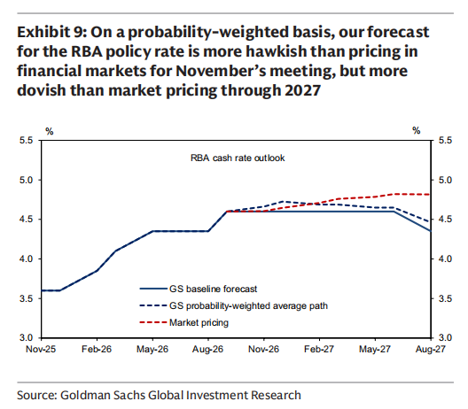
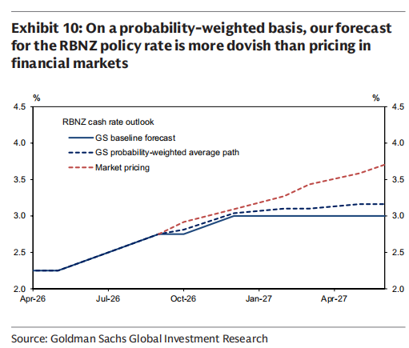
背景与关键数据
- RBA cash rate / OCR：分别是澳洲央行的政策利率、新西兰央行的"官方现金利率"（Official Cash Rate），相当于各自的"基准利率"。
- 市场定价（market pricing）：把利率期货/掉期里隐含的预期，换算成"市场认为未来会加息多少"。这里"11 月加息概率 15%"就是市场隐含的概率。
- 基线预测 vs 概率加权路径：基线是高盛认为"最可能"发生的单一情景；概率加权路径是把"加息 / 不加息"几种情景按各自概率加权平均后的路径，所以会略高于基线（因为多算了一点加息的可能）。
- 预期差：交易的核心不是央行"加不加息"，而是"比市场预期更鹰还是更鸽"。高盛这里的结论是——对澳洲，近端比市场更鹰，远端比市场更鸽；对新西兰，全程比市场更鸽。
图片解读
- 图 1（澳洲，Exhibit 9）：横轴 2025 年 11 月到 2027 年 8 月，纵轴利率 %。实线是高盛基线：从 2025 年底 3.60%，2026 年陆续加到 4.60%，之后水平走到 2027 年中，再向下降到约 4.35%（对应"2027 年三季度开始降息"）。蓝色虚线（概率加权）在 2026 年底略微抬到约 4.7% 然后缓降；红色虚线（市场定价）则一路走高，到 2027 年中升到约 4.85%——市场相信还会再加息，高盛不同意。图的标题总结得很清楚："11 月比市场更鹰，2027 年全程比市场更鸽"。
- 图 2（新西兰，Exhibit 10）：纵轴 2%–4.5%。OCR 从 2026 年 4 月的 2.25% 起步，逐步升到约 2.75%；高盛基线在 12 月升到 3.00% 后水平不动；红色虚线（市场定价）则一路向上，到 2027 年 8 月接近 3.7%，也就是市场押注还要再加好几次。标题直接写"高盛比市场定价更鸽"。
为什么重要 / 对市场和经济的含义
- 它说明2026 年的全球利率故事并不是"全体降息"：澳新这些国家在加息周期里（我的推测与帖 6 的原油、能源冲击有关）。
- 高盛认为"加息快结束"，从一般逻辑看，这对澳元、新西兰元是偏利空的判断（利率上行空间比市场认为的小），对债券则是偏利多（利率高点更近）。
- 与帖 5 对读：澳洲房市正在被已有的加息拖累，而央行如果再加息，房价的下跌幅度会比 JPM 的基准预测更深——两条帖子其实在描述同一个故事的两头。
延伸知识
- 为什么要看"市场定价"而不是"央行说了什么"：央行的公开表态通常含糊，而市场定价代表真金白银的押注；用基金经理的话讲，"价格里已经装下了大多数人的预期，你要赚钱就要找到和预期不同的点"。
- OIS（隔夜指数掉期）：用来推算市场对未来政策利率的预期，是银行和对冲基金最常用的"央行路径探测器"。帖 5 的图 2 里就出现了它。
帖 3 ｜ 中国国企订购 130 万吨美国大豆，但价格仍下跌（14:15 PDT）
中国国企恢复买美国大豆（至少 20 船、约 130 万吨），但这是"政治任务式采购"，而不是商业买卖；在供给充足的大背景下，大豆期货依然跌到了 8 月以来的最低。读全文收起
帖子原文
bloomberg： 中国进一步采购美国大豆，延续了采购热潮。这是9月底碰面之后，中国首次恢复采购美国大豆。中国国有企业已经预订至少20船美国大豆，合计约130万吨。主要装船时间为今年12月至明年3月。美国农业部周五宣布，美国向中国销售了55.8万吨大豆，这是今年报告的第二大单日销售规模。但今年大豆供给非常旺盛，全球最大大豆出口国巴西正在播种的新一季大豆产量可能进一步增加，导致芝加哥交易所成交最活跃的大豆期货合约周五仍然下跌。 需要注意，大豆迄今没有被列入降税清单。这意味着，美国大豆进入中国仍需承担约13%的关税。在这样的关税水平下，美国大豆对普通商业买家而言缺乏经济可行性。因此，本轮采购主要由中国国有企业推动。之前协议透露，到2028年为止，每年购买至少2500万吨美国大豆。 标签：经济数据
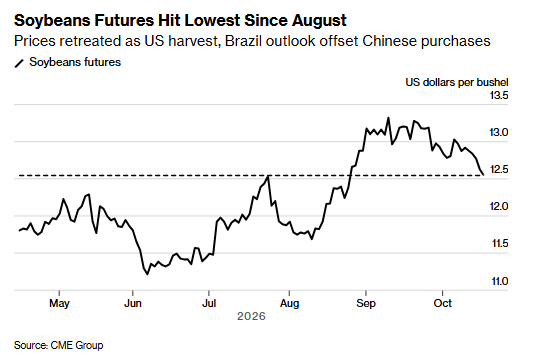
背景与关键数据
- 国企采购 ≠ 商业采购：美国大豆进中国要缴约 13% 的关税（我的补充：一般理解为 3% 的最惠国税加上 10% 的反制加征关税；帖子本身只说"约 13%"）。这个成本下，民营榨油厂买巴西豆更划算，所以买美国豆的只剩国企，实际是在履行贸易协议的承诺量。
- 承诺量：帖子写到"到 2028 年，每年至少购买 2500 万吨"。130 万吨只是这个长期承诺里的一小块。
- USDA 周五公告：美国农业部会对单日对单一目的地的大额销售做披露（"flash sale"，我的补充：通常是 10 万吨以上），这一次 55.8 万吨是"今年报告的第二大单日销售"。
- 为什么价格还在跌：美国今年大豆丰产、巴西新季大豆正在播种（南半球 9–11 月播种，次年 1–3 月收获），合起来全球供给偏多，需求端的这点"利好"被供给压住了。
- 装船时间 12 月至 3 月：这段窗口前半段是美国豆的传统出口旺季，到了 2–3 月巴西新豆上市就会抢走份额，所以美国豆"窗口期"并不长。
图片解读
Bloomberg 图"Soybeans Futures Hit Lowest Since August"，单位是美元/蒲式耳（bushel，约 27 公斤）。
- 横轴 2026 年 5 月到 10 月，价格在 6 月见低点约 11.2，7 月涨到约 12.5，8 月再回落到约 11.7，9 月急涨到峰值约 13.25（中旬），然后一路下滑，现在回到约 12.5。
- 图中的水平虚线就是 12.5——"上一次价格在这个位置是 8 月"，所以标题说"跌到 8 月以来最低"。
- 副标题"Prices retreated as US harvest, Brazil outlook offset Chinese purchases"一句话讲清：美国收割 + 巴西前景，抵消了中国买盘。
为什么重要 / 对市场和经济的含义
- 看点在于政策性需求能不能撑住价格：这次答案是"撑不住"。这提示我们：贸易协议里的"承诺量"不会自动变成"价格上涨"，市场更看全球供需。
- 对美国农户：价格走低 + 关税壁垒还在，政治上仍有压力；对中国：国企买单把成本留在国内、也给了美方一个"完成承诺"的姿态。
- Jason 把它放在"经济数据"标签下，我的推测是想提醒：中美关系的缓和是"有选择的缓和"——买大豆这样的象征性大宗商品，但关税并没有真正取消。
延伸知识
- 南北半球作物季节相反：美国大豆 9–10 月收割、巴西 1–3 月收割，所以全球大豆市场每年大致在"美国季 → 巴西季"之间交接。看大豆价格要同时看两边的天气。
- 政府采购扭曲价格信号：当买家是国企而不是普通商人，买卖就不全按价格来，这会让价格对供需的反映变得"钝"。
帖 4 ｜ 欧盟准备"第二击"工具，中国对欧出口激增（14:22 PDT）
欧盟领导人在讨论一个"第二击（second-strike）"新工具：一旦认为对方在攻击欧盟经济，可以迅速限制其进入欧洲单一市场；背景是中国对欧出口创纪录、欧盟又对中国稀土高度依赖。读全文收起
帖子原文
bloomberg： 欧洲官员目前正在推演....可能采取的升级行动，以及欧洲应如何应对。欧洲官员认为，.....过去一直试图考验欧盟的团结程度，并利用成员国之间的利益差异进行分化。他们预计，这一次....仍可能采取类似策略。最大的麻烦是稀土，欧盟46%的稀土进口来自.....，而重稀土进口则100%依赖.....。重稀土是生产高性能永磁体的重要原料，广泛用于国防系统和电动汽车。 欧盟冯德莱恩周五在布鲁塞尔对记者表示：欧盟领导人明确支持采取行动。我们的产业已经提出要求，我们听到了这些诉求，并将作出回应，包括采取更多保障措施。周四，欧盟领导人还提出了其他希望采取行动的行业，包括：机器人产业；太阳能和风能产业；医疗行业。德国默茨周五表示：我们希望建立应对产能过剩、高额补贴和汇率低估的工具。我们将拥有一套更加完善的政策工具，并在必要时加以使用。欧盟贸易主管谢夫乔维奇强调，欧盟的计划是同时推进两条路线：一方面继续与....对话，另一方面采取欧盟认为必要的行动。他也明确表示，此前与....达成的混合动力汽车协议仅仅是一个开始，未来还需要采取更多措施，才能重新平衡双边经贸关系。在极端情况下，如果中国等竞争对手被认为正在攻击欧盟经济，欧盟委员会可以限制其进入欧洲单一市场。 冯德莱恩表示：我们将开发一种新工具，在符合欧盟利益的情况下，可以迅速、立即采取决定性行动，限制进入单一市场。按照欧盟的设计，这是一种所谓的第二击措施（second-strike measure）。它的目的不是主动发动贸易战，而是威慑其他经济体，阻止它们通过不公平政策削弱欧洲企业，或者率先对欧盟发动贸易战。法国马克龙表示：我们见证了欧洲贸易政策发生非常深刻的变化。它变得更加务实，也更愿意保护本国产业和经济参与者免受不公平竞争。 标签：政策分析
（注：原文以省略号隐去了国名；根据文中"中国等竞争对手"和配图标题"中国对欧洲出口激增"，所指是中国。）
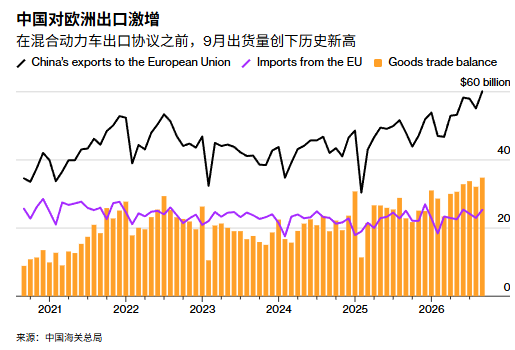
背景与关键数据
- 稀土依赖：欧盟 46% 的稀土进口来自中国，重稀土 100% 依赖。重稀土（如镝、铽）是高性能永磁体的关键原料，直接关系到电动车电机和国防系统，所以是欧盟最大的"软肋"。（我的补充：中国自 2025 年 4 月起对部分中重稀土实行出口许可管制，欧洲企业对此记忆犹新。）
- 欧盟的"保障措施"：safeguard，是 WTO 规则下在进口激增造成损害时可以临时限制进口的工具。冯德莱恩说要"采取更多保障措施"。新点名的行业：机器人、光伏和风电、医疗。
- 默茨的诉求：德国总理想要"应对产能过剩、高额补贴、汇率低估"的工具，这三个词几乎就是欧洲对中国制造业的全部指控。
- 第二击措施：不是主动出击，而是"如果对方先动手，我就立刻封你的市场"。目的是威慑。（我的补充：欧盟 2023 年底生效的"反胁迫工具"（ACI）也属于类似思路，帖里讲的是一个新设计的、更快速的工具。）
- 混合动力车协议：欧盟与中国此前就混合动力车达成过协议，欧盟贸易官员称"这只是开始"。
图片解读
Bloomberg 图"中国对欧洲出口激增"，副标题"在混合动力车出口协议之前，9 月出货量创下历史新高"，数据来自中国海关总署。
- 三条数据：黑线 = 中国对欧盟出口；紫线 = 中国从欧盟进口；橙色柱子 = 货物贸易差额。
- 横轴 2021 年到 2026 年，纵轴 0–600 亿美元（右上角标 $60 billion）。黑线从 2021 年的约 350–450 亿美元/月震荡上行，2026 年冲到约 600 亿美元/月，创历史新高；紫线（进口）长期在约 200–250 亿美元上下波动、基本没涨；于是橙柱（顺差）越来越高，最新约 350 亿美元/月。
- 信号：欧盟的"进口"没怎么变，但"出口"翻了又翻——失衡主要来自中国卖给欧洲的东西变多，而不是欧洲买得少。标题里"在混合动力车出口协议之前"暗示 9 月可能有"赶在协议生效前抢出货"的因素（这是我的读法，不是原图结论）。
为什么重要 / 对市场和经济的含义
- 欧洲从"口头批评"走向"制度化反制"：贸易政策的主基调从自由贸易转向"保护产业"。
- 对中国出口企业：欧盟是中国最重要的出口市场之一，一旦门槛抬高，企业会加快"绕道"——在东欧、北非、东南亚设厂。（群里有成员留言说"浙江不少工厂已经去摩洛哥开厂了"，这是评论区个人说法，我没有核实。）
- 对市场：欧洲车企、新能源、机械股的盈利预期都会受"关税/限制"影响；对稀土和永磁体产业链是中长期利多。
- Jason 把它归在"政策分析"，我的推测是想强调：贸易失衡正在从"中美问题"扩散成"中国 vs 所有主要经济体"的问题，和帖 9 里 IMF 谈到的主题完全一致。
延伸知识
- "中国冲击 2.0"：2000 年代初，中国入世后出口大增，让欧美一些制造业地区失业严重，被称为"中国冲击"。现在新一轮冲击来自新能源车、光伏、机器人这类高端制造——欧洲这一次反应比当年快得多。
- 产能过剩与汇率低估：产能过剩 = 国内需求不足、产量太大只能出口；汇率低估 = 人民币偏便宜让出口更有价格优势。欧洲认为这两点叠加，等于"不公平竞争"。
帖 5 ｜ JPM：澳洲房市"正在挨锤"，房价或从高点跌 5–9%（14:25 PDT）
澳洲拍卖成交率自 6 月以来平均不到 50%，是 2011 年以来最弱；摩根大通预测房价会从高点回落 5–9%，是"调整"而不是"崩盘"。读全文收起
帖子原文
JPM： 澳大利亚全国住房拍卖成交率自6月以来平均低于50%，这是2011年以来最疲弱的一段时期。房价也相应作出了反应。根据Cotality的数据，简单中位数房价已经比高点下降4%，而经过住宅自身特征调整的享乐价格指数（Hedonic Price Index）下降幅度接近5%。我们发现，澳大利亚央行每加息25个基点，拍卖成交率平均下降约7个百分点。 我们的基准预测是，本轮澳大利亚房价从高点到低点累计下跌中高个位数百分比，大致可以理解为5%—9%的区间，而不是预测房价会出现两位数的大幅崩跌。 标签：其他国家经济
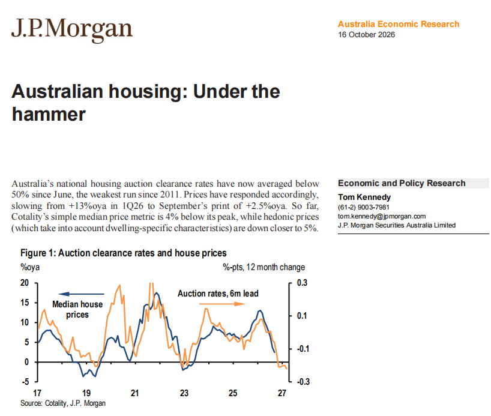
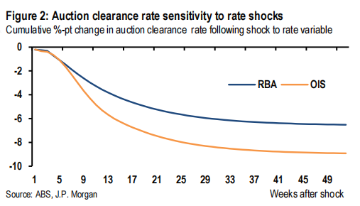
背景与关键数据
- 拍卖成交率（clearance rate）：澳洲有大量房子通过现场拍卖出售，成交率 = 当周拍卖中成功卖出的比例。通常 60% 以上说明市场偏热，低于 50% 说明买家明显不愿出价。它比房价本身更早反映买家情绪，所以被当成领先指标。
- 简单中位数 vs 享乐价格指数：简单中位数就是"这个月卖出的房子的中间价"，容易被"这个月卖得多的是大房子还是小房子"扰动；享乐指数（hedonic）把面积、位置、房型等特征调整掉，更接近"同一套房子值多少"。所以两者给出 −4% 与接近 −5% 两个数。
- 房价增速：JPM 报告首页文字写到，房价同比增速从 2026 年一季度的 +13% 降到 9 月的 +2.5%——增速在快速刹车，但还没转负。
- 基准预测：累计下跌 5%–9%，"中高个位数"，不是两位数。
图片解读
- 图 1（报告首页，2026 年 10 月 16 日，JPM Australia Economic Research，作者 Tom Kennedy）：左轴（蓝线）是房价同比增速（%）；右轴（橙线）是拍卖成交率的 12 个月变化（百分点），而且橙线被平移了 6 个月，图中标注"Auction rates, 6m lead"。2017–2026 年两条线形状高度一致，橙线先动，蓝线 6 个月后跟上。最右端：蓝线已经降到接近 0%（和正文说的 9 月 +2.5% 略有出入，可能是不同的价格口径或截至日期）；橙线已经掉到约 −0.2、跌破零轴——意味着"如果历史规律继续成立，未来几个月房价同比增速会转为负数"。
- 图 2（Figure 2，成交率对利率冲击的敏感度）：横轴是冲击后的周数（1 到 49 周），纵轴是成交率累计变化（百分点）。蓝线（RBA 官方利率冲击）一年后累计约 −6.5 个百分点；橙线（OIS，即市场利率路径冲击）累计约 −9 个百分点。两条线前 25 周下降最快，之后趋平。我的读法：同样是一次加息冲击，如果体现为市场利率（买家实际面对的按揭利率预期）上行，对成交率的伤害比官方利率本身更大；帖子里的"每加息 25 个基点，成交率下降约 7 个百分点"大致落在这两条线之间。
为什么重要 / 对市场和经济的含义
- 澳洲家庭债务很重，而且大部分按揭是浮动利率或短期固定，所以加息传导非常快：加息 → 月供上升 → 买家退场 → 成交率下降 → 房价走软。
- 房价是家庭财富的大头：房价下跌会通过"财富效应"压制消费，这是澳洲经济的主要下行风险之一。
- 与帖 2 对读：高盛认为澳洲央行"维持 4.60% 很久"，JPM 的 5–9% 预测也是基于"没有更多加息"。如果 11 月真的再加息，这个预测可能偏乐观。
延伸知识
- 享乐定价（hedonic pricing）：一种把"商品质量变化"从价格里剥离的统计方法。不只用于房子，CPI 里手机、电脑的价格也用类似思路（否则"今年手机比去年便宜"的判断会不准）。
- 领先指标：像成交率这类指标，反映的是"价格形成之前的意愿"，通常比价格先动；在交易或判断周期时，比看价格本身更早。
帖 6 ｜ 布伦特原油重回 110 美元，美债下跌，美国财政赤字 1.99 万亿（14:34 PDT）
油价（布伦特）回到 110 美元、长债收益率被推高，同时美国 2026 财年赤字扩大到 1.99 万亿美元，其中利息支出首次突破 1 万亿——"能源冲击 + 债务压力"把油价和美债重新绑在了一起。读全文收起
帖子原文
bloomberg： 随着近期全球石油供应紧张局面得到缓解的希望逐渐减弱，布伦特原油价格自5月以来首次触及每桶110美元，促使交易员加大押注油价上涨的力度。在周五的交易过程中，全球主要石油出口地区持续发生冲突的消息不断传出，市场看涨情绪逐渐增强。伊朗支持的胡塞武装继续使用导弹和无人机袭击沙特阿拉伯，而俄罗斯与乌克兰则持续针对彼此的能源基础设施发动报复性袭击。油价上一次达到这一水平是在将近五个月前。当时，全球原油和成品油运输陷入瘫痪，最终促成了一项脆弱且短暂的协议，使霍尔木兹海峡得以暂时重新开放。 周五，美国提出从战略石油储备中释放最多1700万桶原油。并游说其他国家采取类似措施。 美国国债价格下跌，原因有二：一是市场此前预期美国财政部官员会直接暗示可能减少长期国债发行，但这一预期落空；二是国际油价上涨。由于美国财政赤字持续存在，而且现有债务的利息支出在过去五年翻了一番，美国政府面临越来越大的融资需求。周五油价大幅上涨，部分原因是美国国会议员试图阻止特朗普政府与俄罗斯达成的柴油供应协议。这一事件至少暂时恢复了油价与美国国债收益率之间的联动关系。 周五，彭博美元即期指数（Bloomberg Dollar Spot Index）一度下跌0.4%，本周可能创下9月4日以来最差表现。周五上午，沃什在曼谷举行的国际货币基金组织（IMF）年会上发表讲话，但没有评论美国货币政策，也没有谈及美国经济。随后，投资者削减了对美联储本月晚些时候加息的押注。 根据美国财政部周五公布的数据，截至9月结束的2026财年，美国联邦财政赤字扩大至1.99万亿美元。相比2025财年的1.78万亿美元，赤字增长约12%。其中，联邦政府支出增长约6%，达到7.4万亿美元；财政收入增长约3%，达到5.4万亿美元。美国联邦政府净利息支出增加814亿美元，达到创纪录的1.05万亿美元。社会保障支出增加864亿美元，达到1.67万亿美元。联邦医疗保险（Medicare）支出增加760亿美元，达到1.07万亿美元。美国财政部长斯科特·贝森特（Scott Bessent）将关税退款列为今年财政赤字扩大的重要原因之一。2026财年已经是美国联邦财政赤字连续第四年保持在约2万亿美元的水平。根据相关数据估算，2026财年美国财政赤字约占GDP的6%。这一比例在失业率相对较低的时期尤其罕见。贝森特此前表示，美国能够迅速扭转债务增长趋势。但经济学家普遍持怀疑态度。 标签：其他国家经济
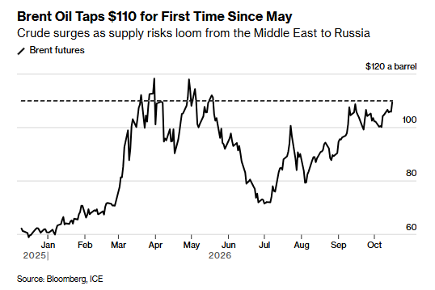
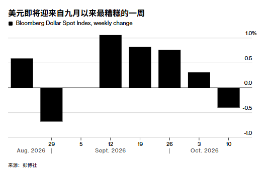
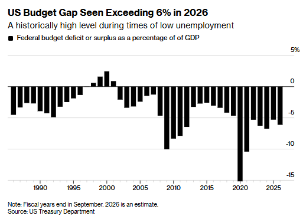
背景与关键数据
1）油价。 布伦特原油（Brent）是国际油价的主要基准。这次上涨的逻辑是"供给风险"：胡塞武装袭击沙特、俄乌互相打能源设施、此前霍尔木兹海峡一度瘫痪的记忆还在。美国提议从**战略石油储备（SPR）**释放最多 1700 万桶，并游说其他国家跟进。（我的补充：全球每天消耗约 1 亿桶石油，1700 万桶大约只够全球用不到 4 小时，所以这类释放更多是"安抚情绪"，而不是真正改变供需。）
2）美债为什么跌（收益率为什么涨）。 帖子给了两个原因：
- 财政部上一次"季度再融资"时没有暗示会减少长期国债发行（市场原本有这个期待）——供给没减少，长债价格自然承压；
- 油价上涨推高通胀预期，也推高收益率。 这里"国债价格下跌 = 收益率上升"，两者是反着走的。
3）美元与美联储。 彭博美元指数一度跌 0.4%，本周可能是 9 月初以来最差的一周。沃什（据上下文应是现任美联储主席沃什）在 IMF 年会发言时，没有评论货币政策，投资者因此减少了对"美联储本月晚些时候加息"的押注——说明市场之前是在认真押"加息"，不是押降息。
4）财政数据（2026 财年，截至 9 月底）。
- 赤字 1.99 万亿美元，比上一年（1.78 万亿）多约 12%；
- 支出 7.4 万亿（+6%），收入 5.4 万亿（+3%）——支出增速是收入的两倍；
- 净利息支出 1.05 万亿美元，创纪录，比上年多 814 亿；
- 社保 1.67 万亿（+864 亿）、联邦医保 1.07 万亿（+760 亿）；
- 贝森特把"关税退款"列为赤字扩大的重要原因之一——也就是之前收的关税有一部分要退还；
- 连续第四年赤字在约 2 万亿；约占 GDP 的 6%，而此时失业率并不高。
图片解读
- 图 1（Brent Oil Taps $110 for First Time Since May）：布伦特期货从年初约 62 美元起步，3 月起快速上冲，4–5 月达到约 118 美元的高点；6–7 月暴跌到约 71 美元；8 月起重新上行，9 月在 100–108 美元之间震荡，本周触及约 110 美元（图中水平虚线就是这个位置）。副标题"供给风险从中东蔓延到俄罗斯"。
- 图 2（美元即将迎来自九月以来最糟糕的一周）：彭博美元即期指数的周度变化柱状图。8 月底到 9 月初那一周（9 月 4 日收官的一周）约 −0.7%；9 月 5 日那周几乎持平；之后 9 月中下旬连续三周上涨约 +0.75%~+1.05%，10 月第一周 +0.3%，本周约 −0.4%——所以是"自 9 月初以来最差的一周"。
- 图 3（US Budget Gap Seen Exceeding 6% in 2026）：美国联邦赤字占 GDP 比重的历年柱状图（财年，2026 为估算）。1990 年代末到 2000 年有几年盈余；2009 年约 −10%，2020 年约 −15.5%（疫情）；2022 年起回到约 −5.5%~−6.5%，2026 年约 −6%以上。副标题"在低失业率时期，这是历史上少见的高水平"——赤字通常在衰退时才这么大，现在经济不差也这么大，就是结构性问题。
为什么重要 / 对市场和经济的含义
- 油价—通胀—利率的传导链：油价上涨 → 通胀预期上升 → 市场认为央行难降息甚至要加息 → 长债收益率上行 → 估值承压。这条链今天"重新生效"了。
- 利息支出滚雪球：美国现在每年光是还利息就要 1.05 万亿，比社保以外的几乎所有大项都大。利率越高，借新还旧越贵，财政空间越小。
- Jason 把油价、美债、美元、赤字放在同一条里，我的推测是想让读者看到：美国问题不是单一的"赤字"，而是"赤字 + 高利率 + 能源冲击"互相放大。
延伸知识
- r > g 与债务滚雪球：如果政府借债的利率（r）高于经济增速（g），即使不新增开支，债务占 GDP 的比重也会自己往上滚。这正是帖 9 里 IMF 质疑贝森特"靠增长解决债务"的核心：增长要高于利率才有用。
- 季度再融资（refunding）：美国财政部每个季度公布发多少债、发什么期限。市场非常在意其中的措辞——"未来几个季度长债发行规模不变"和"可能削减"对长债价格影响很大。
帖 7 ｜ Jason 自制图表：估算今年中美财政赤字/GDP 会收窄（14:36 PDT）
Jason 用自己的数据估算：2026 年中美（G2）的财政赤字占 GDP 的比例都会收窄；其中中国的"两本账"赤字率从约 −9% 缩到约 −7.5%，上半年已经从 −7.9% 缩到 −6.6%。读全文收起
帖子原文
估算今年G2的赤字/GDP比例会收窄 标签：自制图表
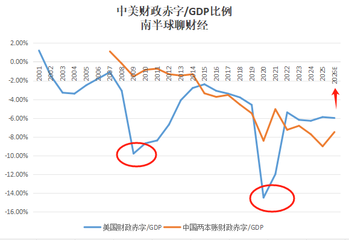
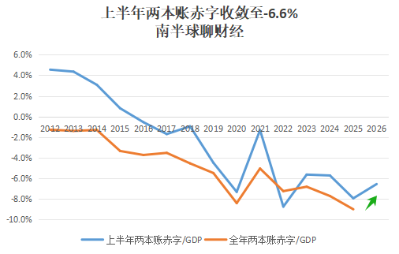
背景与关键数据
- G2：指中美两个最大的经济体。
- 两本账：中国财政有四本预算，其中最大的两本是"一般公共预算"（税收为主）和"政府性基金预算"（卖地收入、专项债为主）。官方说的"赤字率"通常只算第一本，所以很多研究者会把两本合并，得到更全面的"两本账赤字/GDP"。
- 赤字/GDP：财政赤字占经济规模的比例，是衡量"财政刺激力度"的粗略指标：赤字越大，说明政府花得比收得多，对经济的支撑越强。
- 赤字收窄可能意味着两件事：要么收入回升了，要么支出在收紧。到底是哪一种，要看分项。
图片解读
- 图 1（中美财政赤字/GDP 比例）：蓝线 = 美国，橙线 = 中国两本账，纵轴从 +2% 到 −16%，横轴 2001–2026E。
- 美国：2001 年约 +1.2%；2009 年掉到约 −9.8%（金融危机，红圈）；2020 年掉到约 −14.5%（疫情，红圈）；之后回到约 −5.4%（2022）、−6.1%（2023）、−6.3%（2024）、约 −5.8%（2025），2026E 约 −5.9%。
- 中国：2007 年约 +1.1%；2015 年起下探到 −3% 以下；2020 年约 −8.4%；2021 年约 −5.0%；2022 年约 −7.2%；2024 年约 −7.7%；2025 年约 −9.0%（高点）；2026E 约 −7.5%。图右上角的红色箭头，指的就是 2026E 中国这个"向上回收"。
- 两个红圈标出了美国两次最深的赤字：危机期的大规模财政刺激。
- 图 2（上半年两本账赤字收敛至 −6.6%）：蓝线 = 每年上半年的两本账赤字/GDP，橙线 = 全年的两本账赤字/GDP，2012–2026。蓝线 2012 年约 +4.6%，之后一路下滑，2022 年约 −8.7%，2025 年约 −7.9%，2026 年上半年约 −6.6%（绿色箭头标出"收敛"）。橙线（全年）到 2025 年约 −9.0%为止。上半年比去年收敛了约 1.3 个百分点；我推测他是据此外推：全年大概率也会收窄，所以图 1 里把 2026E 画成 −7.5% 左右（具体外推方法帖子没写）。
为什么重要 / 对市场和经济的含义
- 对中国：财政"从发力到收力"，可能意味着对经济的支撑边际减弱；但同时（见帖 10）9 月政府债发行明显提速，说明"上半年收窄≠下半年不发力"。
- 一个要保留的地方：从他这张图上看，美国那条线 2025→2026E 基本持平（约 −5.8%→−5.9%），并不是明显收窄；而帖 6 里财政部数据显示 2026 财年赤字金额比上年多了约 12%、占 GDP 约 6% 以上。所以"G2 同时收窄"这句话，主要由中国撑着，美国最多是"没有继续恶化"。我没有看到他对美国部分估算的出处，这一点需要打个问号。
- 他的口径与 Bloomberg 也不同（例如 2020 年他是约 −14.5%，帖 6 的图约 −15.5%），主要是财年 / 日历年、统计口径的差别，不影响大趋势。
延伸知识
- 结构性赤字 vs 周期性赤字：周期性赤字是经济不好、税收少、救济多造成的，经济好转自己会缩；结构性赤字是即使经济正常也存在的赤字。美国现在的"低失业率下 6% 赤字"就是典型的结构性赤字。
- 财政乘数：政府多花 1 元，最终能带来多少 GDP。赤字收窄意味着这个"外力"变小，要靠私人部门接棒。
帖 8 ｜ 人民币国际化的下一关：愿不愿意"持有"人民币（14:42 PDT）
人民币国际化已经从"能不能用来结算"进入"愿不愿意长期持有"的阶段，卡点是对冲工具（利率衍生品、国债期货）和资本账户开放度，而香港是这套"可控开放"的试验场。读全文收起
帖子原文
bloomberg： 过去，人民币国际化的讨论主要集中在一个问题：国际贸易能不能不用美元，改用人民币结算？现在，中国正在尝试解决另一个更深层次的问题：外国企业、金融机构和中央银行收到人民币以后，愿不愿意继续持有人民币？人民币国际化不仅需要更多人民币，还需要能够对人民币资金进行跨期限定价的市场。中国有关部门正在通过多种方式解决这些问题。其中包括扩大与香港之间的重要衍生品交易互联互通机制，使外国投资者能够接触更多中国境内的利率产品。此外，今年8月，香港还推出了一批新的中国国债期货产品，为全球投资者提供额外的风险对冲工具。 但从国际货币体系的角度看，人民币要进一步成为主要储备货币，还面临一个重要制度约束：资本账户的开放程度。国际投资者持有一种货币，通常不仅考虑收益率，还会考虑：能否随时买入和卖出资产；能否方便地将资金汇入和汇出；能否在市场剧烈波动时获得充足流动性；能否以可预期的规则管理汇率、利率和法律风险。中国正在通过债券通、互换通、离岸人民币市场和其他跨境金融安排改善这些条件。但这并不意味着人民币已经实现完全自由兑换。中国仍然需要在扩大国际资本流动与维护国内金融稳定之间进行权衡。这也解释了为什么香港在人民币国际化战略中如此重要。香港既可以为国际投资者提供离岸人民币资产市场，又能够通过互联互通机制连接中国内地金融市场。从制度设计上看，这是一种在保留内地资本管理框架的同时，逐步扩大人民币国际使用范围的方式。 标签：金融
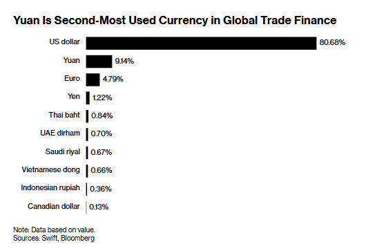
背景与关键数据
- 两步走：第一步是结算（贸易时用人民币付款），第二步是持有（外国机构收到人民币后，愿意把它当资产放着）。第二步难得多，因为持有意味着要承担汇率、利率、流动性风险。
- 跨期限定价市场：要让外国持有人民币，得有工具让他们管理不同期限的利率风险（例如国债期货、利率互换），否则持有 10 年期人民币债券的利率风险没法对冲。帖子提到：8 月香港新推了一批中国国债期货，互联互通机制也扩大到更多利率产品。
- 资本账户开放：指资金进出一国的自由度。国际投资者关心：随时能买卖吗？汇进汇出方便吗？市场动荡时有没有足够流动性？规则可预期吗？
- 债券通、互换通：让境外投资者通过香港通道买内地债券 / 做利率互换；离岸人民币（CNH）市场主要在香港。
- 香港的位置：一手连境外，一手连内地，在"内地资本管制框架不变"的前提下，逐步扩大人民币使用——可以理解为"把防洪闸门开一条受控的小缝"。
图片解读
Bloomberg 条形图"Yuan Is Second-Most Used Currency in Global Trade Finance"（人民币是全球贸易融资第二大使用货币），按金额计，来源 Swift、Bloomberg。
- 美元 80.68%（遥遥领先）；人民币 9.14%（第二）；欧元 4.79%；日元 1.22%；泰铢 0.84%；阿联酋迪拉姆 0.70%；沙特里亚尔 0.67%；越南盾 0.66%；印尼盾 0.36%；加元 0.13%。
- 读法：美元一家独大（约八成），人民币是第二，但只有美元的九分之一左右；人民币的占比约为欧元的 1.9 倍。
- 一个要注意的口径（我的补充）：这是"贸易融资"（信用证、保函之类），而不是"所有跨境支付"或"外汇储备"。在 SWIFT 统计的全部支付里，人民币占比通常只有三四个百分点；在各国央行外汇储备里约只有 2% 上下。所以 9.14% 是人民币的"强项数据"，不能直接当成"人民币已经是第二大国际货币"。
为什么重要 / 对市场和经济的含义
- 如果人民币真的能被外国机构长期持有，美元在全球贸易和储备中的垄断就会松动，长期会影响美债需求、美元汇率溢价。
- 但资本账户开放 vs 国内金融稳定是一个两难：开放得越多，国际资本进出越自由，国内遇到压力时资金外流风险也越大。这也是为什么中国选择"香港试点 + 额度管理"的慢路线。
- 今天读起来有两层呼应：帖 9 里中国央行行长潘功胜在 IMF 年会上向全球投资者推介人民币资产；帖 4 里欧盟对中国出口的反制——人民币国际化不仅是金融问题，也是地缘问题。
延伸知识
- 国际货币的三个职能：计价单位（报价用什么货币）、交易媒介（付款用什么货币）、价值储藏（储备和投资持有什么货币）。美元三项都强；人民币目前主要在"交易媒介"上追，"价值储藏"最弱——也就是帖子说的"愿不愿意持有"。
- 不可能三角（三元悖论）：一个国家不能同时拥有"固定汇率、资本自由流动、独立货币政策"三项，最多取两项。中国目前的选择是：保留独立货币政策 + 管理汇率 + 控制资本流动——这决定了人民币国际化只能是"渐进式"的。
帖 9 ｜ IMF 曼谷年会闭幕：债务、AI 繁荣与全球失衡（17:31 PDT）
IMF/世界银行年会闭幕：主要警告是 AI 繁荣失衡、能源冲击和创纪录债务；IMF 把全球失衡的解法归结为"中国多消费、美国多储蓄、欧洲多投资"。读全文收起
帖子原文
bloomberg： 全球金融界的精英们周五结束了在曼谷为期一周的会议。整个会议期间，关于人工智能繁荣失衡、长期能源冲击，以及创纪录的债务负担的警告不断出现。美国代表团的其他成员，此行的一个重要目标，是促使IMF将更多注意力放在中国身上。本周全球债券收益率有所回落，暂时缓解了部分压力。但这种缓解程度仍然十分有限。在会议开始之前，IMF总裁格奥尔基耶娃批评富裕国家是高债务问题中"最严重的违规者"。随后，她又对贝森特提出的通过经济增长解决美国债务问题的计划提出质疑。欧洲央行行长克里斯蒂娜·拉加德（Christine Lagarde）也认为，美国需要正视自身的财政问题。中国人民银行行长潘功胜罕见地在年会期间公开参与国际金融活动，向全球投资者推介人民币资产。就在本届会议举行期间，北京公布了新的贸易数据，显示中国今年的贸易顺差可能再次打破历史纪录。担心中国出口商品冲击本国产业的，并不只有美国、日本和欧洲。IMF提出解决全球失衡的三个方向：中国多消费，美国多储蓄，欧洲多投资。 标签：金融
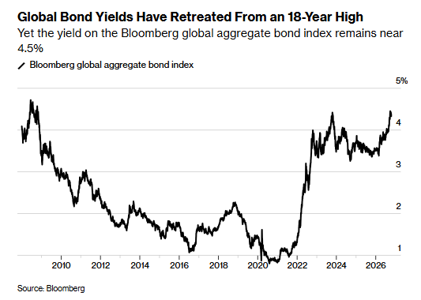
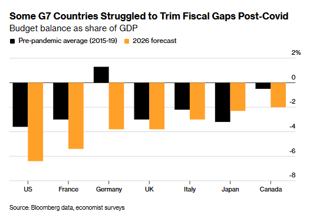
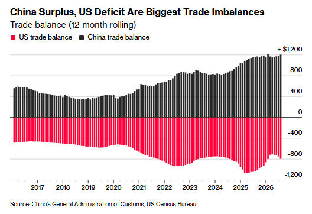
背景与关键数据
- IMF 的态度：总裁格奥尔基耶娃把富裕国家称为高债务问题里"最严重的违规者"，又质疑贝森特"靠增长解决债务"的计划；拉加德也说美国要正视财政问题。也就是说，在今年的年会上，美国是被点名最多的对象之一。
- 美国代表团的诉求：促使 IMF 把更多精力放在中国身上（失衡问题要谈中国的出口和顺差）。
- 中国的动作：央行行长潘功胜罕见公开向全球投资者推介人民币资产（呼应帖 8）；同期中国贸易数据显示今年顺差可能再创纪录。
- IMF 的三句药方：中国多消费、美国多储蓄、欧洲多投资。背后是一个很简单的恒等式：一国的经常账户 = 储蓄 − 投资。中国储蓄远大于投资 → 大额顺差；美国储蓄不够投资 → 大额逆差；欧洲（尤其德国）投资不足 → 储蓄过剩。要缩小失衡，三边都得动。
图片解读
- 图 1（Global Bond Yields Have Retreated From an 18-Year High）：彭博全球综合债券指数的收益率（%），2008–2026。2008 年约 4.7%，之后一路降到 2020–2021 年的约 0.8%（接近零利率时代），2022 年起飙升，2023–2024 年到 4% 以上，2025 年回落到约 3.5%，2026 年又冲回约 4.4–4.5% 的近 18 年高位后略有回落。副标题"收益率仍然接近 4.5%"。意思是：全球借债的利息成本已回到金融危机前的水平，这是对"高债务国家"最大的压力。
- 图 2（Some G7 Countries Struggled to Trim Fiscal Gaps Post-Covid）：G7 各国财政赤字占 GDP 的比重——黑柱是疫情前平均（2015–19），橙柱是 2026 年预测。美国约 −3.7% → −6.5%；法国约 −3.1% → −5.5%；德国约 +1.2%（盈余）→ −3.9%；英国约 −3.1% → −3.9%；意大利约 −2.3% → −3.1%；日本约 −3.3% → −2.4%（反而改善）；加拿大约 −0.6% → −2.0%。恶化幅度最大的是德国（约 5 个百分点，从盈余变成赤字）；美国（约 2.8 个百分点）和法国（约 2.4 个百分点）其次，但美国的绝对水平最高；日本是少数改善的。
- 图 3（China Surplus, US Deficit Are Biggest Trade Imbalances）：12 个月滚动的贸易差额，黑色是中国顺差、红色是美国逆差，单位十亿美元。中国顺差从 2016 年前后约 5000 亿美元一路涨到现在约 1.2 万亿美元；美国逆差在 2025 年初（关税落地前抢进口）达到约 −1.1 万亿，随后收窄到约 −8000 亿。两个相反方向的巨大数字，就是 IMF 谈的"全球失衡"的直观图像。
为什么重要 / 对市场和经济的含义
- 利率高企 + 债务创新高：全球债券收益率回落只是"暂时缓解"；真正的风险是利息负担越来越大，政府被迫挤压其他开支。
- 全球失衡不是中美两国的事：帖里写到"担心中国出口商品冲击本国产业的，并不只有美国、日本和欧洲"——新兴市场国家同样在担心，这和帖 4 欧盟推出新工具的背景对得上。
- 评论区有成员说"IMF说的都对"；Jason 在帖 12 的评论区写了"雍正是中药、IMF 是西药"，我读成：他认为 IMF 的"三个多"是对症的大药方，但落地需要"制度改革"这剂更深的药。
延伸知识
- 经常账户恒等式（S − I）：想理解"为什么中国顺差、美国逆差"，最简单的办法就是看谁储蓄多、谁投资多。中国储蓄率长期在 45% 左右；美国居民和政府的储蓄都偏低。所以让"中国多消费"在数学上就是降低储蓄、减少顺差。
- "增长解决债务"需要什么条件：经济增速 g 要持续高于借债利率 r（见帖 6）。当全球收益率回到 4–5%，要求名义增长也要在这个水平之上，这对多数国家并不容易。
帖 10 ｜ 华创：9 月金融数据——"钱到了账上，却没有被用起来"（17:36 PDT）
华创认为：9 月的存款数据看起来"企业存款回升"是好事，但背后是"财政发债 → 花出去 → 变成企业和居民的存款 → 又没人用，被动沉淀成定期"，所以利润领先指标的回升未必能持续。读全文收起
帖子原文
华创： 我们前期7月和8月金融数据点评均提示市场预期可能开始波动。彼时我们观测到利润的领先指标开始顶部震荡，估值的研判指标则持续走弱。9月数据来看，估值的研判指标仍相对偏弱，但利润的领先指标（企业居民存款剪刀差）则重新向上抬升。不过，结合后续分析来看，该利润领先指标的抬升未必能延续。 9月金融数据有三个特点，一是与实体经济生产经营行为相关的单位存款（非金融企业存款为主）其同比抬升规模，是剔除过年扰动后，自2025年8月以来的最高值；二是与金融交易更为相关的非银机构存款同比连续五月转负，上一次持续五个月及以上的同比收缩出现在2022年5—10月。三是9月政府债发行明显提速，其同比抬升规模同样是剔除过年扰动后，自2025年8月以来的最高值。 9月金融数据为何呈现上述特点？我们推断，9月金融数据可能体现为"财政发债吸收非银资金、财政支出补充实体存款、资金被动沉淀定期化"的传导链条。在政府债加速发行、但银行体系购买政府债力度相对有限的情况下，非银部门承接政府债导致非银存款转化为财政存款，再随财政支出转化为企业和居民存款。但由于实体部门的生产、投资和消费支出意愿不强，且金融资产夏普比率回落也压制了实体部门的金融投资意愿，因此流向企业和居民的资金未能进一步活化或回流非银体系，而是在缺乏支出和投资意愿时的被动沉淀为定期存款。 标签：金融
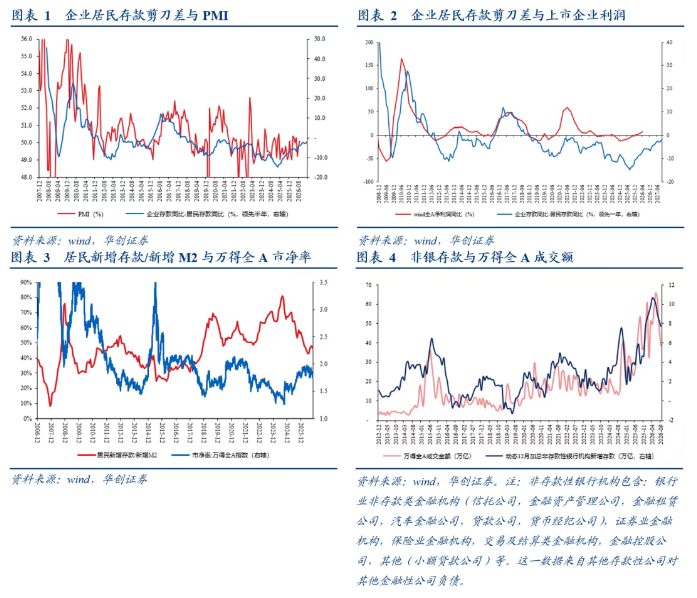
背景与关键数据
先把几个术语讲清楚：
- 企业居民存款剪刀差：企业存款同比增速 − 居民存款同比增速。企业存款相对居民更快增长，通常意味着企业现金流、盈利在改善（居民"搬家"进了股市等也会拉大剪刀差）。华创把它当作利润的领先指标（图中标注：领先 PMI 半年、领先上市公司利润一年）。
- 估值的研判指标：帖子没有点明具体是哪一个；从配图推测，用的是"居民新增存款 / 新增 M2"这个比例与万得全 A 的市净率对照（我的理解）。比例高 = 居民更愿意把钱存银行、不愿意进市场，对应估值偏弱。
- 非银机构存款：证券公司、基金、保险、理财子公司等"非银行金融机构"放在银行里的存款，代表金融交易的资金——连续五个月同比为负，意味着留在金融市场里的闲置资金在减少，上一次类似是 2022 年 5–10 月（当年 A 股大幅走弱）。
- 剔除过年扰动：春节时点每年不同，会让存款数据"虚高/虚低"，所以华创做了调整。
三个特点：
- 单位存款（主要是企业存款）同比抬升规模是 2025 年 8 月以来最高；
- 非银机构存款同比连续五个月为负；
- 9 月政府债发行明显提速，规模同样是 2025 年 8 月以来最高。
华创的传导链条（把它画成一条线更容易懂）： 政府发行国债 → 买债的主要是非银机构（银行买得少）→ 非银的存款变成财政存款（政府账户上的钱）→ 政府花钱 → 变成企业和居民的存款 → 但企业没意愿投资和消费，金融资产的夏普比率（风险调整后的回报）也在下降，居民和企业也不愿意买金融资产 → 钱既不去消费投资，也不回流金融市场，而是被动沉淀成定期存款。
图片解读
这是华创证券报告里的四幅图（资料来源：Wind、华创证券）。
- 图表 1（企业居民存款剪刀差与 PMI）：红线 PMI（左轴，约 48–56%）与蓝线"企业存款同比 − 居民存款同比"（右轴，领先半年）。两条线长期同向，最右端剪刀差从低位抬头，对应 9 月的"回升"。
- 图表 2（企业居民存款剪刀差与上市企业利润）：红线是 Wind 全 A 利润同比，蓝线是剪刀差（领先一年）。同样是蓝线先动、红线后动的"领先—滞后"关系。最右端蓝线有抬头迹象，但仍处在偏低位置。
- 图表 3（居民新增存款/新增 M2 与万得全 A 市净率）：红线是居民新增存款占新增 M2 的比例（左轴 0–90%），近两三年曾冲到约 80% 的高位，最右端已回落到约 45%；蓝线是万得全 A 的市净率（右轴 1.5–3.5 倍），最右端在 2 倍出头。近两年红线从高位回落、蓝线从低位抬升，两者大体呈反向关系——居民把更多新增资金放到存款以外的地方时，估值就被抬上去。图的精度有限，我没法读出最近一个月的方向。
- 图表 4（非银存款与万得全 A 成交额）：粉色是万得全 A 的成交额（万亿元，左轴），深蓝是非银机构当月新增存款（右轴）。两条线高度同步，最右端同步冲高后回落——说明股市成交活跃时非银存款多，反之则少。下方备注列出了"非银机构"的范围：信托、金融资产管理、金融租赁、汽车金融、证券、保险、交易及结算类机构、金融控股、小额贷款等。
为什么重要 / 对市场和经济的含义
- 这篇的结论比较谨慎：不要因为企业存款回升就乐观，这次回升是"财政支出推出来的"，不是企业自己赚到钱、愿意投资带来的。
- 对 A 股：非银存款同比连续五个月负增长，意味着市场里的"增量资金"不足；和帖 1 对照看，官方在买、民间资金没有跟上，这就是为什么国家队托底只能稳住下限。
- 对宏观：钱被存成定期，说明"流动性够，但需求不够"——货币政策放水效果有限，需要的是让企业和居民"愿意花钱、愿意投资"的预期改善。
延伸知识
- "推绳子"（pushing on a string）：凯恩斯学派的比喻——央行可以"拉"（紧缩）很有效，但想"推"（放松）却未必推得动，因为借钱和花钱的意愿是企业和居民自己的，不是央行能决定的。
- 资产负债表衰退：经济学家辜朝明用这个概念解释日本 1990 年代：企业和居民把还债、存钱放在第一位，哪怕利率很低也不借钱不投资，于是货币政策失效、需要财政出手。帖里"被动沉淀为定期存款"和这个故事有相似之处，但是否等同需要更多证据。
帖 11 ｜ "贷款交社保"的截图是真的吗？（17:47 PDT）
网上流传"办贷款来交社保"的截图，Jason 一开始以为是伪造的，但核查后确认是湖北省人社厅官网的真实文章；不过这是 2025 年发布的荆门地方项目，并不是新出台的全国政策。读全文收起
帖子原文
看到这张图我还以为是伪造的 标签：TAX
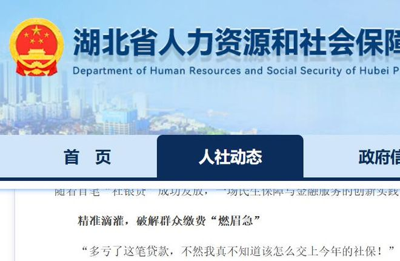
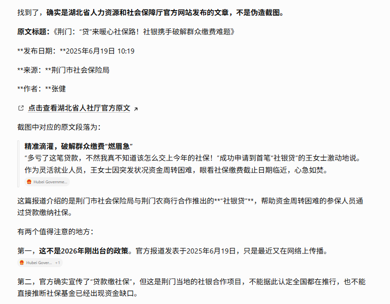
背景与关键数据
- 图 1（官网截图）：湖北省人力资源和社会保障厅网站，"人社动态"栏目，页面里出现这样的句子："随着首笔'社银贷'成功发放，一场民生保障与金融服务的创新实践……"，小标题"精准滴灌，破解群众缴费'燃眉急'"，以及一位受益者的话："多亏了这笔贷款，不然我真不知道该怎么交上今年的社保！"
- 图 2（核查结果）：看起来是某个 AI 助手回答的截图（图中没写是哪一个），结论是：确实是官网发布的文章，不是伪造。信息：原文标题《荆门："贷"来暖心社保路！社银携手破解群众缴费难题》；发布日期 2025 年 6 月 19 日 10:19；来源荆门市社会保险局；它介绍的是荆门市社保局与荆门农商行合作的"社银贷"，帮助资金周转困难的参保人（例子里是一位灵活就业人员）用贷款缴纳社保。
- 核查里的两个提醒：① 不是 2026 年新政策，只是最近又在网上传播；② 这是荆门地方的"社银合作"项目，不能据此认定全国都在推行，也不能直接推断社保基金已出现资金缺口。
- 评论区有成员说"官网能检索到链接，点进去就是 404 了"，这是评论区个人说法，我没有核实。
图片解读
两张都不是图表：第一张是官网页面截图（政府网站抬头 + 文章片段），第二张是 AI 做事实核查的截图（原文标题、日期、出处、结论与两条注意事项）。传递的信号是"眼见不一定为实，核查才是关键"——这类"疑似段子"的截图，必须回到原始出处确认。
为什么重要 / 对市场和经济的含义
- 灵活就业人员（自己缴养老、医疗）在经济不景气时，现金流最容易紧张，这个案例反映的是居民部门的现金流压力，但只是一个个案，不能推出全局。
- 这个话题和帖 10、12 是同一条线：居民部门不愿意花钱、中央—地方财政紧张。Jason 的标签是"TAX"，我的推测是他在关注"居民和政府之间的钱怎么流动"。（我的补充：2025 年 9 月起，最高法司法解释明确"约定不缴社保无效"，对小微企业和灵活就业者的缴费压力是上升的，这可能是类似项目出现的一个大背景，但与荆门案例的直接因果没有证据。）
- 评论区的联想很有意思：有人想到王安石的青苗法、明代的一条鞭法，也有人说"越来越像 1566"（电视剧《大明王朝 1566》，讲嘉靖年间国库亏空和改革）——这些都是"古代政府钱不够时怎么向民间要钱"的类比，正好和帖 12 的主题呼应。
延伸知识
- 青苗法（王安石变法，北宋）：春天青黄不接时，官府以较低利率借钱给农民，秋天收成后连本带息归还。初衷是帮农民摆脱高利贷，但实施中被地方官当作"增收手段"，变成强制摊派，成了最受争议的新法之一。
- 谨防"断章取义式转发"：看到"某政策""某数据"的截图，先看发布日期、出处、适用范围，再决定要不要当真，是读财经新闻的基本功。
帖 12 ｜ 长文《朝廷财政压力太大？民变在即？雍正教你一手》（19:02 PDT）
Jason 借一篇北大论文，讲康熙末年"中央拿走八成正式税收、地方事多钱少 → 逼地方向百姓加收'火耗' → 国库见底"，以及雍正如何用"火耗归公 + 摊丁入亩"把灰色收入正规化、再重新分配——并暗示这套"财政结构矛盾"对今天仍有启发。读全文收起
说明：这条是一篇长文（知识星球文章，articles.zsxq.com），我已读到全文（页面把全文重复渲染了两遍，这里只取一份）。无配图。
帖子原文
朝廷财政压力太大？民变在即？雍正教你一手
刷了篇北大的论文，挺有意思——
作者说康熙时代，虽然顶着"盛世"的美名。但其财政有一个核心矛盾，就是中央掌握了绝大部分正式税收，占比8成，而地方则承担了和财权不匹配、"过分"的行政事务。
当碰到地方自然灾害时，中央拨付的赈灾款很少、地方又无财政余力，所以导致民众受害、粮食经济也塌陷。
中央挤出地方，地方则必然要对居民部门"动脑筋"。比如火耗。
火耗指的是，居民部门交税，交银子，要融化重铸成银锭才算入国库。而这个工艺过程会产生损耗，这个损耗要居民部门额外支付"附加税"。
这个理由，对于弱势方来说，算是一个叹口气的"台阶"。但问题是，这个口子一开，很自然的一个结果，就是比例不受控制，变得太大了。30-40%，这不是损耗，这是明着...
另一个问题是，地方本来是"钱不够"，火耗这个工具一用，很多钱的路径变得不透明了。也就是说，一群人先富了起来。
先富起来说明什么？结构性通胀+结构性通缩。现在的话叫K型。当地方有钱可以"养自己人"时，对地方的控制力也变强了。
除了火耗之外，还有很多收钱的名义，不完全列举——
但凡只要和"公事"搭上边，总有一款"附加税"合适你。
在这样一个财政语境里，居民部门必然是有怨气的，不少想要"越级"控诉。但....越往上，居民部门头上的一座山就越小，越像朝廷眼里不紧急的一粒灰尘。
除非，除非这粒灰尘，在国库里形成了蝴蝶效应。
康熙挂的时候，据说国库余"银"大幅下滑，有一说是只有800万两，而各地报上来的亏空超过900万两。感觉快破产了。
轮到雍正。
情况就是这么个情况，居民部门，没钱，有怨气；地方部门，账面上没钱，私下过得相当滋润；中央部门呢，还要面对外部压力。
雍正接手的时候，一场西北战争还在进行时——
这意味着军费压力很大。据说每年就要花900万两。
雍正知道，要想保住位置，被迫只能改革。改革就是要动既得利益者利益。
火耗归公、摊丁入亩就来了。
火耗是地方的灰色财政，既然已经收了那么久，那就把它正规化，当然，为了居民部门的信心修复，也降了比例到10-20%。
这肯定动了既得利益者的蛋糕。但没办法。雍正不是全部抽掉进中央部门，而是重新分配，所以分化了利益集团，不是铁板一块就好对付了。
有阻力说，你现在把火耗归公，就是把灰色变成正常的，那么早晚还会有新的灰色产生。这话确实预言家了，但短期内，说得有点早。
除了火耗归公，雍正还搞了摊丁入亩。
本来是对人头征税，所以地方为了少上缴税收，会少报人口。现在改为对资产征税，更聚焦于资产持有者。当然，资产持有者也会把税负再转移给弱势人头。看起来好像换汤不换药。错了。这样弱势人头不高兴的对象变化了。原本他们是对财政部门不高兴，现在呢，是看到资产持有者不高兴。这对于一直有激烈抗议的古代来说，还是很重要的。
最近另一篇论文也提及了这点——
生活不如意很难改变，这是体感。但不如意的原因，是可以通过魔术"改变"的。
不得不说，雍正在位时间不长，但整顿组合拳打得很不错，财政乍现"中兴"之势。
在军备这么耗钱的背景下，退位的时候国库存银明显高于接手的时候。
但长期看，制度约束没有根本性变化，军备的"产业"升级+长期投入也始终在消耗（挤出）居民部门的财力。这都是后话了。
评论区 Jason 本人补了一句："雍正是中药、IMF 是西药"。
背景与关键数据
- 核心矛盾：财权和事权不匹配。中央拿大头收入，地方却承担大量行政支出。钱不够，地方就只能想办法"自己找钱"。
- 火耗：百姓交的碎银子要熔铸成标准银锭才能入库，熔铸有损耗，官府就借"补损耗"之名额外加收。理论上只该几个点，实际被推到 30–40%，成了没有上限、不透明的隐性附加税。
- K 型分化：地方官员靠火耗先富起来（"养自己人"），居民部门被压缩，形成结构性通胀与结构性通缩并存的"K 型"。
- 康熙末年的财政困局：作者引用的说法是国库银只剩约 800 万两，各地上报亏空超过 900 万两；西北战争每年军费约 900 万两（这些数字都是文章里的"据说"，不是严格考证）。
- 雍正的两招：
- 火耗归公：把灰色加收变成合法的、统一的税，比例降到 10–20%，而且不是全部上交中央，而是重新分配，分化了既得利益集团。（我的补充：同时配套"养廉银"——用这笔钱给官员发高额薪水，防止再贪。）
- 摊丁入亩：把原来按人头收的税，并入土地（资产）税里，让资产多的人多交，让百姓怨气从"对政府"转向"对地主"。
- 结果：雍正在位时间不长，国库存银却明显高于接手时（我的补充：常被引用的数字是末年存银六千多万两）；但制度约束没有根本改变，长期军备、产业投入仍在"挤出"居民部门的财力。
图片解读
本帖没有配图。
为什么重要 / 对市场和经济的含义
我的推测：Jason 想借古喻今，关注这几个现实问题——
- 中央—地方财政关系：今天中国的分税制下，也是中央拿走较大比例收入、地方承担大部分支出（我的补充：地方一般承担约八成以上的财政支出，具体比例以官方数据为准），于是出现土地财政、隐性债务、各种收费罚款——和"火耗"有结构上的相似。
- 居民部门负担与信心：居民"没钱、有怨气"，会压低消费意愿，这和帖 10（钱沉淀为定期存款）、帖 11（贷款交社保）是同一个主线。
- "西药 vs 中药"：他在评论里说"雍正是中药、IMF 是西药"——我的读法：IMF 的药方（让中国多消费）是针对症状的"西药"，而雍正式的做法是调整内部分配、重塑激励结构的"中药"，更慢但更治本。
- 评论区也有不同声音：有人质疑"给了地方，就能进公共支出了？"，也有人说"古代动的是皇上的蛋糕，动得狠了要杀头株连，现在么……"——这提示"改革成本由谁承担"是关键。
延伸知识
- 分税制改革（1994）：中国现代财政体制的基础——把税种划分为中央税、地方税、共享税，中央集中了更多收入，但地方事权没减少，所以"财权上移、事权下沉"的矛盾一直存在，是后来土地财政和地方债务的重要背景。
- 隐性税负与"制度性成本"：除了法定的税，各种名目的收费、罚款、摊派也是居民和企业的真实负担。一个国家的"真实税负"要看正式税 + 隐性成本，而不是只看公布的税率。
今日全图索引
| 帖号 | 时间（美西，PDT） | 主题 | 标签 | 图片文件名 |
|---|---|---|---|---|
| 帖 1 | 10-16 13:49 | 国家队单日净买入沪深300ETF 188 亿创纪录 | A股 | post1_img1.png |
| 帖 2 | 10-16 14:09 | 高盛：澳洲 11 月加息概率被低估，新西兰加一次就停 | 金融 | post2_img1.png、post2_img2.png |
| 帖 3 | 10-16 14:15 | 中国国企订购 130 万吨美豆，价格仍下跌 | 经济数据 | post3_img1.png |
| 帖 4 | 10-16 14:22 | 欧盟"第二击"工具与中国对欧出口激增 | 政策分析 | post4_img1.png |
| 帖 5 | 10-16 14:25 | JPM：澳洲房市拍卖成交率最弱，房价或跌 5–9% | 其他国家经济 | post5_img1.png、post5_img2.png |
| 帖 6 | 10-16 14:34 | 布伦特 110 美元、美债下跌、美国赤字 1.99 万亿 | 其他国家经济 | post6_img1.png、post6_img2.png、post6_img3.png |
| 帖 7 | 10-16 14:36 | 自制图表：中美赤字/GDP 比例预计收窄 | 自制图表 | post7_img1.png、post7_img2.png |
| 帖 8 | 10-16 14:42 | 人民币国际化：从结算到持有 | 金融 | post8_img1.png |
| 帖 9 | 10-16 17:31 | IMF 曼谷年会闭幕：债务、AI 与全球失衡 | 金融 | post9_img1.png、post9_img2.png、post9_img3.png |
| 帖 10 | 10-16 17:36 | 华创：9 月金融数据，钱被动沉淀为定期 | 金融 | post10_img1.png |
| 帖 11 | 10-16 17:47 | "贷款交社保"截图核查 | TAX | post11_img1.png、post11_img2.png |
| 帖 12 | 10-16 19:02 | 长文：雍正的火耗归公与财政改革 | （无标签，长文） | （无图） |